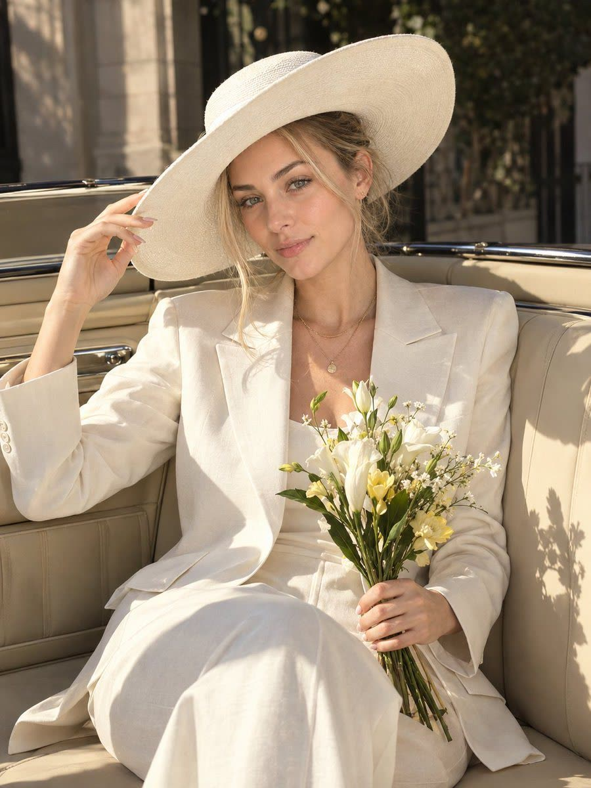

Luxury Fashion Portrait in Convertible Car
WRD-003WardrobeNano Banana Proby AynelleOctober 3,

A prompt for generating a high-end fashion editorial image featuring a woman in a convertible car, focusing on golden-hour lighting and detailed clothing textures.
Prompt
Create a photorealistic luxury fashion portrait of an elegant young woman seated inside a sophisticated cream-colored luxury convertible. She wears a pristine ivory-white tailored pantsuit with a structured blazer, fitted trousers, delicate layered gold necklaces, and a dramatic oversized white wide-brim hat that partially shades her face. She holds a small bouquet of fresh white and pale-yellow flowers in one hand while gracefully touching the brim of her hat with the other. The composition feels like a high-end summer fashion editorial. Warm golden-hour sunlight streams directly across the scene, creating beautiful natural highlights, deep cinematic shadows, and a striking silhouette of the flowers and hat on the cream leather seat. The interior features premium ivory quilted leather upholstery with subtle vintage-luxury details. Elegant relaxed pose, sophisticated feminine styling, natural hands and fingers, realistic fabric texture, detailed flowers, realistic skin pores, soft natural makeup, refined jewelry, subtle wind movement in the hair, warm sun-kissed atmosphere, premium fashion photography, 85mm lens, shallow depth of field, cinematic composition, realistic exposure, high dynamic range, editorial color grading, ultra-detailed, lifelike photography. Negative prompt: CGI, 3D render, cartoon, illustration, plastic skin, distorted face, extra fingers, malformed hands, duplicate flowers, blurry details, overexposure, artificial lighting, text, logo, watermark.
Tags: 35mm film, fashion, portrait